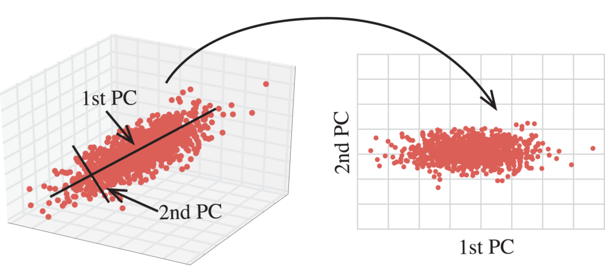

Manifold learning and dimensionality reduction of data
XIMENA FERNANDEZ
Project Module 2025
Dimensionality reduction
Find a projection of data in $\mathbb{R}^N$ to a smaller dimensional space $\mathbb{R}^n$ ($n< < N$) while preserving some features from the original data.
Dimensionality reduction
Principal component analysis (PCA)
Goal: identify the underlying principal components in the data and project onto lower dimensions, minimizing variance, and preserving large pairwise distances.
Captures global, linear structure.
Principal component analysis (PCA)
Goal: identify the underlying principal components in the data and project onto lower dimensions, minimizing variance, and preserving large pairwise distances.
Captures global, linear structure.
Principal component analysis (PCA)
Goal: identify the underlying principal components in the data and project onto lower dimensions, minimizing variance, and preserving large pairwise distances.
Captures global, linear structure.Dimensionality reduction
Inputs are real-valued vectors in a high-dimensional space- Linear structure: data lives in a low-dimensional linear subspace
- Nonlinear structure: data lives on a low-dimensional sub-manifold
Manifolds
Spaces that are locally like $\mathbb{R}^n$, even though they are embedded in a higher dimensional space $\mathbb{R}^N$.Manifold Learning
Multidimensional Scaling (MDS)
Preserves the original distance between the points..Isomap
Minimize the geodesic distance of the original points (within a manifold).
Isomap
ISOMAP = Geodesic Distance Matrix + MDS
UMAP
Assume the sample is uniform, and try to find a new distance on the data that ensures that. Then projects to a lower dimensional space.
UMAP
Assume the sample is uniform, and try to find a new distance on the data that ensures that. Then projects to a lower dimensional space.
t-SNE
Measures the similarity between data points as probabilities.
Constructs a similar probability distribution in the lower-dimensional space and minimizes the difference between the two distributions.
t-SNE
Measures the similarity between data points as probabilities.
Constructs a similar probability distribution in the lower-dimensional space and minimizes the difference between the two distributions.
Applications of manifold learning & dimensionality reduction
Neuroscience
ISOMAP
[Toroidal topology of population activity in grid cells. Gardner et al., Nature, 2022]
Neuroscience
ISOMAP

[Toroidal topology of population activity in grid cells. Gardner et al., Nature, 2022]
Neuroscience
ISOMAP
[Toroidal topology of population activity in grid cells. Gardner et al., Nature, 2022]
Biology
UMAP

[Barbensi et. al. A Topological Selection of Folding Pathways from Native States of Knotted Proteins. Symmetry 2021]
Biology
UMAP

[Barbensi et. al. A Topological Selection of Folding Pathways from Native States of Knotted Proteins. Symmetry 2021]
Face recognition
Riemannian Manifold Learning
[Tong, L., Zha, H. Riemannian manifold learning. IEEE Transactions on Pattern Analysis and Machine Intelligence 30.5 (2008): 796-809.]
Face recognition
Riemannian Manifold Learning
[Tong, L., Zha, H. Riemannian manifold learning. IEEE Transactions on Pattern Analysis and Machine Intelligence 30.5 (2008): 796-809.]
SUmmary
| Method | Nature | Preserves |
|---|---|---|
| PCA | Linear | Maximum variance of linearc omponents |
| MDS | Non-linear | Distance matrix |
| Isomap | Non-linear | Geodesic distance |
| UMAP | Non-linear | Riemmanian metric for unifom distribution |
| t-SNE | Non-linear | Similarity given by probability based on denisty |
Take-home messages
Take-home messages
- Dimensionality reduction techniques are different metods to determine a projection $D\subset \mathbb R^N \to \mathbb{R}^n$ with $n< < N$, while preserving different features of the original space $D$.
- Manifold hypotesis: The data $D$ lies in a low dimensional manifold.
- If $D$ is a linear subspace , then of $\mathbb{R}^N$, linear projections work well.
- If $D$ is a non-linear manifold, projections that preserve the non-linear geometric features are needed.
Goals
- Understand the theory of dimensionality reductions methods using Chapter 20 of book 'Probabilistic Machine Learning An Introduction', by Kevin P. Murphy.
- Implement code in Python to study examples of datasets, based on the book 'Introduction to Machine Learning with Python: A Guide for Data Scientists'by A. Müller and S. Guido.